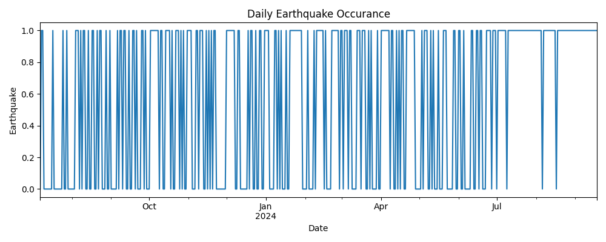
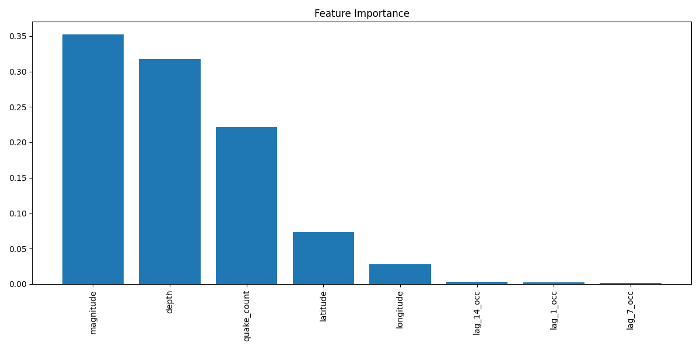
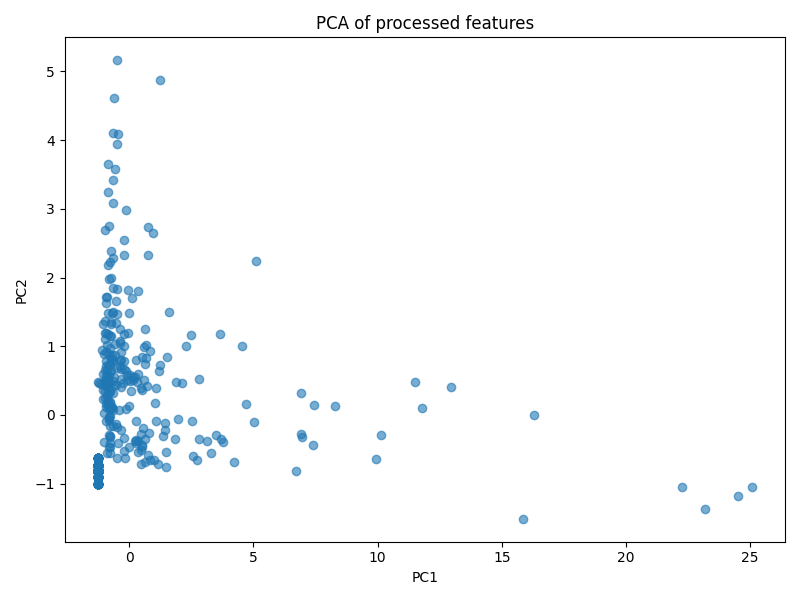

Earthquake PredictionRF Model

The model demonstrates exceptional performance with 100% precision, recall, F1-score, and AUC metrics, suggesting perfect class separation—potentially indicating an idealized synthetic dataset, overfitting, or feature leakage (e.g., lag features inadvertently revealing future events). Robust preprocessing includes temporal feature extraction (hour, day, month), daily seismic metric aggregation, and lag features (1, 7, 14 days), though it lacks spatial analysis for location-specific predictions.
Interpretability is enhanced through visualizations like PCA projections, predicted vs. actual probabilities, and feature importance rankings (highlighting lagged occurrences, depth, and magnitude as key predictors). However, limitations include uncalibrated confidence scores, binary classification (no magnitude/location output), and potential data leakage risks. Future improvements should incorporate geospatial features, probability calibration, and rigorous out-of-sample validation to ensure real-world applicability.
  Back to Projects